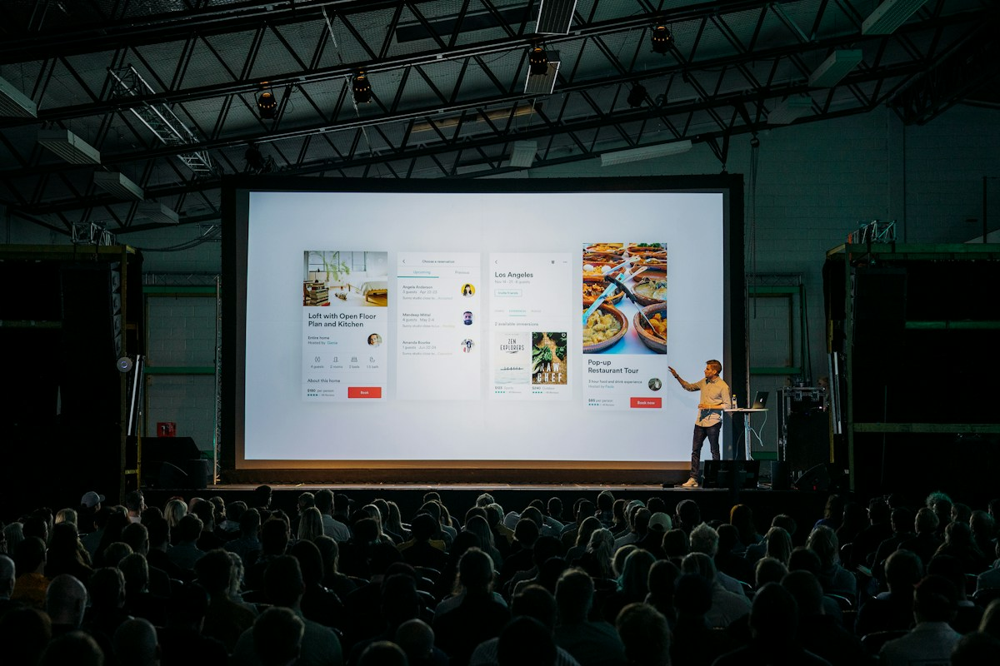

Clip musical
Création audiovisuelle autour d'un morceau, d'un artiste ou d'un projet musical.
Création audiovisuelle
Je réalise des vidéos adaptées à votre projet, qu’il s’agisse d’un film de présentation, d’un événement ou d’une création musicale.
Les formats
Création audiovisuelle autour d'un morceau, d'un artiste ou d'un projet musical.
Retranscrire l'ambiance et les temps forts d'un événement.
Présenter une entreprise, un établissement, une marque ou un savoir-faire.
Donner la parole à une personne, raconter son parcours ou présenter son activité.

Filmer un spectacle, une représentation ou un événement dans son intégralité ou en partie.
Les formats courts et leurs déclinaisons pour les réseaux sociaux sont à confirmer selon les disponibilités et les besoins de diffusion.
Modalités de réalisation
Les modalités et le tarif sont définis sur devis selon le projet.
Faire une demande de devisProjet sur mesure
Parlons de votre lieu, de votre activité ou de votre univers pour imaginer une série d’images adaptée à vos besoins.
Parlons de votre projet